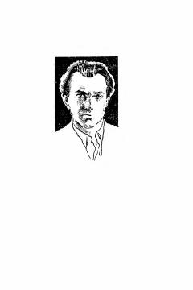

SSug'd xalqining vatan ozodligi uchun Iskandar Zulqarnayn qo'shinlariga qarshi kurashini hikoya qiluvchi tarixiy roman.
Mazkur tarixiy romanda Iskandar Zulqarnaynning Sharqqa qilgan yurishlari va unga qarshi Spantamano boshchiligida vatan ozodligi uchun kurashgan sug'diyonliklarning qahramonligi hikoya qilinadi. Asar qadimgi davr voqealari, xalqlar o'rtasidagi ziddiyatlar va jasorat ruhini ochib beradi. Kitob o'quvchini qadimgi Sharq va Ellada olamiga sayohatga chorlaydi.